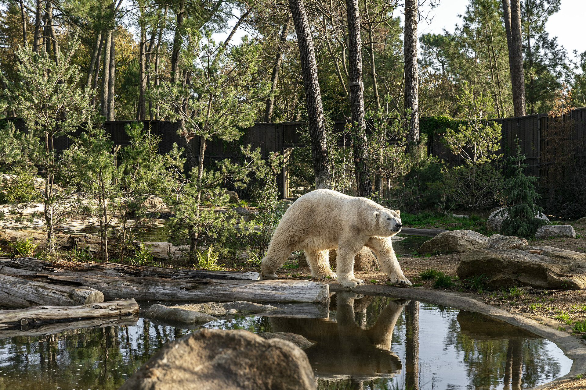

Who are we?
Founded in 1946, the Jardin des Animaux was the first privately-owned zoo to emerge in France. Nearly a century later, it continues to stand out and ranks among the top 5 zoological parks in France in terms of visitors. Through the quality of its facilities and the dedication of its teams, the park focuses all its attention and efforts on the well-being of the animals and the welcoming of visitors.

Jardin des Animaux it's...
1,500
animals from 160 species.18
hectares of woodedarea
55
conservationprograms
32
accommodations in the heart of the parkOur advantages
- Remarkable facilities dedicated to the well-being of the animals.check_circle
- Educational presentations and activities provided throughout the season by the Zoo's teams.check_circle
- An exceptional approach to animal care: implementation of medical training techniques for animal healthcare.check_circle
Jardin des Animaux it's...
120
employees: caretakers, veterinarians, receptionists, landscaping team, technical support, administration...400000
visitorsper year.
The key dates of Jardin des Animaux
- 2023: Legends of Africa, 2 new territories: one for lions and one for cheetahs, and opening of the Safari Suite.
- 2022: Australian Bush for red kangaroos, rock wallabies, and emus.
- 2021: South American aviary: squirrel monkeys, scarlet ibises, anteaters, and maras.
- 2020: Land of polar bears and creation of 2 Safari Lodges in the polar bear universe.
- 2019: Opening of 4 Safari Lodges - Sumatran tiger and cheetah universe.
- 2015: Renovation of the catering area and opening of a Safari Lodge - polar bear universe.
- 2012: Nosy Komba, the island of lemurs.
- 2006: Black panthers.
- 1998: Educational presentations of macaws.
- 1990: Island of chimpanzees.
- 1946: Creation of the park.